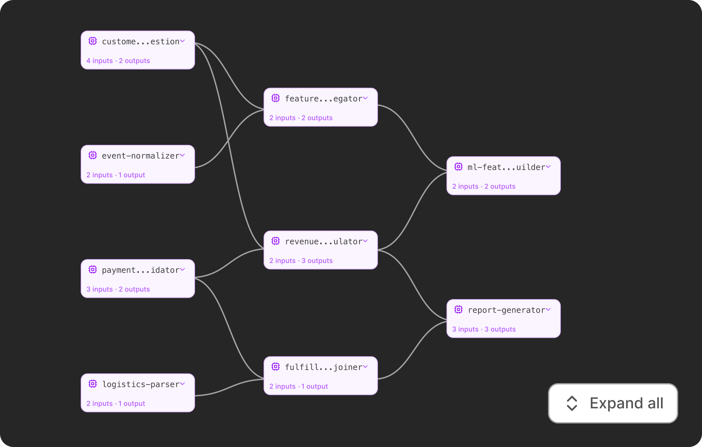

Processor-first view with expand/collapse
Pipelines can have dozens of processors, so the default view shows only processor nodes to keep dependencies clear at a glance. Users can expand any processor to reveal its input and output data assets, and collapse it back when they need the big picture.